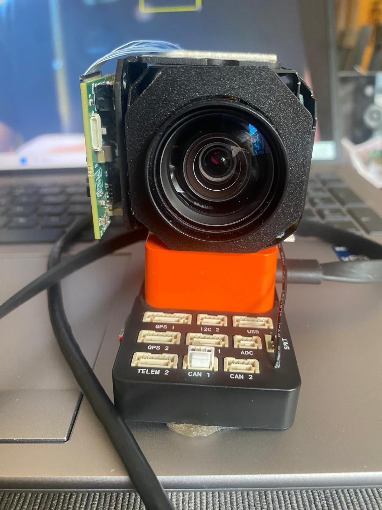
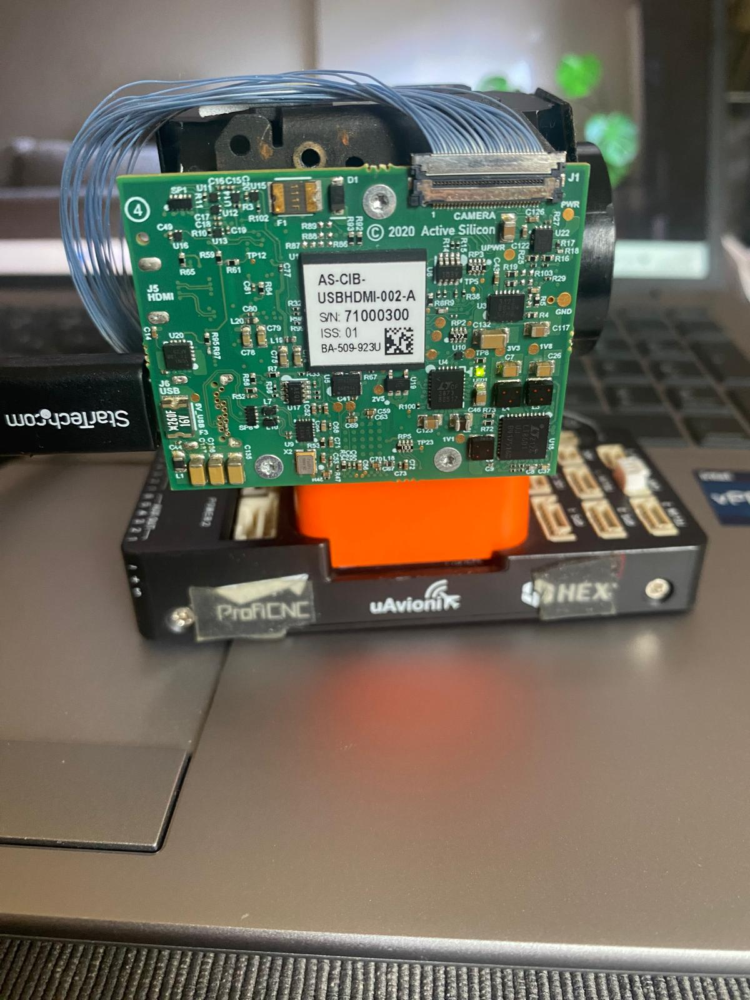
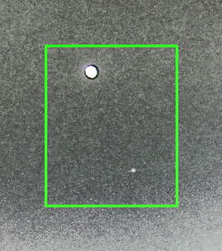
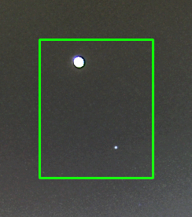
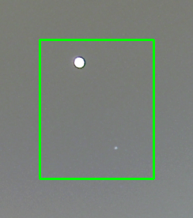

Authors: Giray Yillikci Version: 1.6 Date: January 2026
This paper presents a novel low-cost star tracker system designed to capture faint starlight even in heavily light-polluted urban environments. The core approach combines gyroscope-based motion compensation with video frame stacking: by first stabilizing video captured from moving platforms—seaborne, airborne, and land-based vehicles—using high-rate IMU data, then aligning and stacking hundreds of frames, we effectively increase the signal-to-noise ratio to reveal stars that would otherwise be invisible in individual frames. Our hardware configuration centers on the Active Silicon Harrier 10x AF-Zoom Camera, featuring a 1/2.8” Sony IMX462LQR-C CMOS sensor with exceptional low-light performance (0.0004 lux minimum illumination in monochrome mode), 10x optical zoom (f=5.1-51mm, F1.6-1.8), and 1080p60 video output via simultaneous USB 3.1 and HDMI interfaces. The camera is paired with an Orange Cube flight controller (featuring the ICM-20948 9-axis IMU) for high-precision gyroscope-based motion compensation. The system is validated using Stellarium planetarium software to generate high-fidelity synthetic star fields displayed on a monitor, providing a controlled SIL/HIL test environment with configurable camera motion and vibration profiles. By implementing sophisticated frame stacking techniques and star detection algorithms, our system achieves a cost reduction of 95-99% compared to commercial star trackers while maintaining acceptable performance for amateur astrophotography, meteor detection, and educational applications. The complete system can be assembled for $500-1,500, compared to $10,000-$500,000 for commercial alternatives.
Keywords: Star Tracker, Astrophotography, Gyroscope Stabilization, Image Stacking, Low-Cost Sensors, Harrier Camera, Orange Cube, ICM-20948 IMU, Stellarium, Motion Compensation, SIL/HIL Testing
Star trackers are optical instruments that identify stars in an image and determine the orientation of a spacecraft or camera relative to the celestial sphere. They are essential components in spacecraft attitude determination systems, astronomical observations, and astrophotography. Traditional star trackers are precision instruments with costs ranging from tens of thousands to hundreds of thousands of dollars, making them inaccessible to amateur astronomers, educational institutions, and researchers with limited budgets.
The high cost of commercial star trackers creates significant barriers for: - Amateur astronomers seeking quality astrophotography - Educational institutions teaching astronomy and space sciences - Researchers in developing countries - CubeSat and small satellite projects with limited budgets - Citizen science initiatives
We present a software-intensive approach that shifts complexity from expensive hardware to sophisticated algorithms. The core concept is to capture faint starlight even in light-polluted environments by combining gyroscope-based motion compensation with video frame stacking—stabilizing video from moving platforms (seaborne, airborne, and land-based vehicles), then aligning and stacking hundreds of frames to increase the signal-to-noise ratio and reveal stars invisible in individual frames.
Click thumbnail to watch video demonstration
Prototype System: Our validated prototype uses the Active Silicon Harrier 10x AF-Zoom Camera paired with an Orange Cube flight controller (ICM-20948 9-axis IMU). The system is tested using Stellarium planetarium software to generate high-fidelity synthetic star fields, providing a controlled SIL/HIL environment with configurable motion and vibration profiles.
Alternative Hardware: The software pipeline is designed to work with various camera+IMU combinations, including consumer options like the GoPro Hero 7 Black ($200-400) with its embedded gyroscope, or dedicated astronomy cameras like the ZWO ASI585MC with external IMU.
This work makes the following contributions: 1. A complete open-source star tracker pipeline using consumer hardware 2. Novel gyroscope-based motion compensation using quaternion mathematics 3. Adaptive frame stacking with quality-based selection 4. Triangle-based star matching algorithm for robust alignment 5. Comprehensive cost-benefit analysis compared to commercial solutions
Star trackers have evolved significantly since their inception in the 1960s. Early systems used photomultiplier tubes and mechanical scanning, while modern systems employ CCD and CMOS sensors with sophisticated pattern recognition algorithms.
The fundamental challenge in star tracking is the “Lost-in-Space” (LIS) problem—identifying stars without prior attitude knowledge. Several algorithms have been developed:
Grid Algorithm (Padgett & Kreutz-Delgado, 1997) Divides the celestial sphere into a grid and uses lookup tables for rapid identification. Computational complexity: O(n²) where n is the number of detected stars.
Pyramid Algorithm (Mortari et al., 2004) Uses four-star patterns forming pyramids for robust identification. Offers improved reliability but higher computational cost.
Geometric Voting (Kolomenkin et al., 2008) Employs a voting scheme based on angular distances between star pairs. Provides good balance between speed and reliability.
Triangle Algorithm (Liebe, 1993) Matches triangular patterns formed by star triplets. The basis for our implementation due to its rotation and scale invariance.
Accurate star position determination requires sub-pixel centroiding:
The use of gyroscopes for image stabilization has been extensively studied in both consumer electronics and aerospace applications.
Micro-Electro-Mechanical Systems (MEMS) gyroscopes have revolutionized motion sensing by providing compact, low-cost angular rate measurements. Modern action cameras like the GoPro Hero series incorporate 3-axis MEMS gyroscopes with: - Sampling rates: 200-400 Hz - Noise density: 0.005-0.01 °/s/√Hz - Bias stability: 1-10 °/hr
Combining gyroscope data with accelerometer and magnetometer readings (9-DOF fusion) improves orientation estimation. Common fusion algorithms include: - Complementary filters - Kalman filters (Extended and Unscented variants) - Madgwick filter - Mahony filter
The open-source Gyroflow project (gyroflow.xyz) demonstrates the effectiveness of gyroscope-based video stabilization for action cameras. Our work extends these concepts specifically for astrophotography applications.
Image stacking is fundamental to astrophotography, improving signal-to-noise ratio (SNR) by combining multiple exposures.
Mean Stacking Simple averaging of aligned frames. SNR improvement: √n where n is frame count. Sensitive to outliers (satellites, cosmic rays).
Median Stacking Uses median value at each pixel. Robust to outliers but discards valid signal. SNR improvement: ~0.8√n.
Sigma-Clipping Iteratively rejects pixels deviating more than kσ from the mean. Balances outlier rejection with signal preservation.
Winsorized Mean Clips extreme values to specified percentiles before averaging. Computationally efficient approximation of sigma-clipping.
Accurate frame registration is critical for effective stacking: - Phase Correlation: FFT-based translation detection - Feature Matching: SIFT, ORB, or star-based keypoints - Optical Flow: Dense motion estimation between frames
Several research groups have explored affordable star tracker alternatives:
ST-16 (Sinclair Interplanetary) Commercial CubeSat star tracker, ~$50,000, 2 arcsec accuracy.
NST-1 (Naval Postgraduate School) Academic development, ~$5,000 in components, 30 arcsec accuracy.
Research by Rijlaarsdam et al. (2020) demonstrated star tracking using smartphone cameras, achieving 0.05° accuracy in controlled conditions.
Multiple hobbyist projects use Raspberry Pi with camera modules (HQ Camera, ~$50) for basic star tracking, though without integrated gyroscope stabilization.
Consumer cameras have gained popularity in the amateur astronomy community as accessible alternatives to dedicated astronomy equipment.
GoPro Action Cameras: The GoPro Hero series offers built-in gyroscopes and GPMF telemetry, making them attractive for motion-compensated astrophotography: - Night Lapse mode enables long-exposure sequences - Wide-angle lenses capture large star fields - Built-in IMU enables gyro-based stabilization - Raw format preserves maximum dynamic range
Industrial/Machine Vision Cameras: Cameras like the Active Silicon Harrier series offer superior low-light performance (0.0004 lux) and flexible integration with external IMUs for demanding applications on moving platforms.
Astronomy Cameras: Dedicated cameras like the ZWO ASI585MC offer cooled sensors and exceptional sensitivity but require external IMU integration for motion compensation.
The star tracker market is segmented by application, accuracy, and form factor:
| Segment | Typical Cost | Accuracy | Primary Users |
|---|---|---|---|
| Spacecraft Grade | $100,000-$500,000 | 1-10 arcsec | Space agencies, satellite manufacturers |
| CubeSat Grade | $20,000-$100,000 | 10-60 arcsec | University research, small satellites |
| Commercial Astronomy | $5,000-$30,000 | 1-5 arcmin | Professional observatories |
| Amateur Grade | $200-$2,000 | 5-30 arcmin | Amateur astronomers |
Ball Aerospace CT-2020 - Accuracy: 2 arcsec (pitch/yaw), 15 arcsec (roll) - Update rate: 10 Hz - Mass: 2.5 kg - Power: 10 W - Cost: ~$300,000
Sodern Hydra - Accuracy: 1 arcsec (pitch/yaw) - Update rate: 4 Hz - Mass: 2.3 kg - Cost: ~$400,000
Terma T1/T2 - Accuracy: 5 arcsec - Mass: 0.5-1.5 kg - Cost: ~$150,000
Blue Canyon Technologies NST - Accuracy: 6 arcsec cross-boresight - Mass: 350g - Power: 1.5 W - Cost: ~$75,000
Berlin Space Technologies ST200 - Accuracy: 30 arcsec - Mass: 250g - Cost: ~$40,000
Sinclair Interplanetary ST-16RT2 - Accuracy: 2-7 arcsec - Mass: 185g - Cost: ~$50,000
Sky-Watcher Star Adventurer 2i - Type: Portable equatorial mount - Tracking accuracy: ±5 arcmin/hr - Payload: 5 kg - Cost: ~$400
iOptron SkyGuider Pro - Tracking accuracy: ±3.5 arcmin/hr - Payload: 5 kg - Cost: ~$500
Celestron CGEM II - Tracking accuracy: ±3 arcmin RMS - Payload: 18 kg - Cost: ~$2,000
Commercial star tracker costs are driven by:
| Component | % of Total Cost | Reason |
|---|---|---|
| Optics | 15-25% | Precision ground lenses, low distortion |
| Sensor | 10-20% | Space-qualified, radiation-hardened CCDs |
| Processing | 10-15% | Rad-hard FPGAs/processors |
| Calibration | 20-30% | Extensive ground testing, thermal-vacuum |
| Qualification | 15-25% | Space environment testing |
| Development | 10-15% | R&D amortization |
The high costs of commercial star trackers stem from:
Our low-cost star tracker employs a software-intensive architecture that maximizes the use of consumer hardware while implementing sophisticated algorithms in software.
┌─────────────────────────────────────────────────────────────────────────┐
│ LOW-COST STAR TRACKER SYSTEM │
│ (Prototype Configuration) │
├─────────────────────────────────────────────────────────────────────────┤
│ │
│ ┌──────────────┐ ┌──────────────┐ ┌──────────────────────────┐ │
│ │ Harrier 10x │ │ Moving │ │ Processing │ │
│ │ AF-Zoom │───▶│ Platform │───▶│ Computer │ │
│ │ Camera │ │ (land/sea/air)│ │ (Python Pipeline) │ │
│ └──────────────┘ └──────────────┘ └──────────────────────────┘ │
│ │ │ │ │
│ ▼ ▼ ▼ │
│ ┌──────────────┐ ┌──────────────┐ ┌──────────────────────────┐ │
│ │ Video Stream │ │ Orange Cube │ │ Output Image │ │
│ │ (USB/HDMI) │ │ IMU Data │ │ (Stacked, Aligned) │ │
│ └──────────────┘ └──────────────┘ └──────────────────────────┘ │
│ │
│ SIL/HIL Validation: Stellarium synthetic star fields on monitor │
└─────────────────────────────────────────────────────────────────────────┘The system processes data through eight sequential stages:
┌─────────────┐ ┌─────────────┐ ┌─────────────┐ ┌─────────────┐
│ Stage 1 │ │ Stage 2 │ │ Stage 3 │ │ Stage 4 │
│ Gyro │──▶│ Motion │──▶│ Frame │──▶│ Star │
│ Extraction │ │Compensation │ │ Extraction │ │ Detection │
└─────────────┘ └─────────────┘ └─────────────┘ └─────────────┘
│
▼
┌─────────────┐ ┌─────────────┐ ┌─────────────┐ ┌─────────────┐
│ Stage 8 │ │ Stage 7 │ │ Stage 6 │ │ Stage 5 │
│ Output │◀──│ Image │◀──│ Frame │◀──│ Quality │
│ Saving │ │ Stacking │ │ Alignment │ │ Assessment │
└─────────────┘ └─────────────┘ └─────────────┘ └─────────────┘| Stage | Input | Output | Key Algorithm |
|---|---|---|---|
| 1. Gyro Extraction | MP4 video file | GyroData (quaternions) | GPMF parsing, RK4 integration |
| 2. Motion Compensation | Frames + quaternions | Stabilized frames | Homography transformation |
| 3. Frame Extraction | Video stream | Individual frames | FFmpeg/OpenCV decode |
| 4. Star Detection | Frame images | StarField objects | Connected component analysis |
| 5. Quality Assessment | StarFields | Quality scores | Multi-factor scoring |
| 6. Frame Alignment | Quality frames | Aligned frames | Triangle matching + RANSAC |
| 7. Image Stacking | Aligned frames | Stacked image | Sigma-clipping |
| 8. Output Saving | Stacked image | TIFF/FITS file | 16-bit encoding |
lowcost-star-tracker/
├── pyproject.toml # Project configuration
├── README.md # Main documentation
│
├── Root-level scripts/
│ ├── compare_stabilization.py # Stabilization comparison tool
│ ├── compare_videos.py # Video comparison utility
│ ├── convert_md_to_docx.py # Documentation converter
│ ├── debug_stabilization.py # Stabilization debugging
│ ├── gyro_stabilizer.py # Gyroscope stabilization
│ ├── live_simple_star_solve.py # Simple star solving (live)
│ ├── live_tetra3_solve.py # Tetra3 star solving (live)
│ ├── plot_gyro.py # Gyroscope data visualization
│ ├── stabilize_video.py # Video stabilization tool
│ ├── stellarium_config.py # Stellarium configuration
│ ├── stellarium_shake.py # Stellarium shake simulator
│ ├── stellarium_toggle_labels.py # Stellarium UI control
│ └── test_witmotion_pywitmotion.py # IMU testing
│
├── src/
│ ├── algorithms/ # Core algorithms
│ ├── calibration/ # Calibration modules
│ ├── plate_solving/ # Plate solving algorithms
│ └── star_tracker/ # Main star tracker package
│
├── camera/ # Camera and visualization tools
│ ├── celestial_sphere_3d.py # 3D celestial sphere visualization
│ ├── celestial_sphere_viewer.py # Celestial sphere viewer
│ ├── integrated_stabilizer.py # Integrated stabilization system
│ └── usb_camera_viewer.py # USB camera interface
│
├── calibration/ # Calibration data and scripts
│
├── imu/ # IMU integration
│ ├── __init__.py # IMU package initialization
│ ├── find_witmotion_windows.py # Windows IMU detection
│ ├── pywitmotion_adapter.py # Pywitmotion adapter
│ └── witmotion_reader.py # Witmotion IMU reader
│
├── mavlink/ # MAVLink integration
│ └── orange_cube_reader.py # Orange Cube flight controller
│
├── wfb-stabilizer/ # WFB stabilizer variants
│ ├── README.md # WFB documentation
│ ├── ejo_wfb_stabilizer.py # EJO WFB stabilizer
│ └── run_camera1_*.py # Various camera stabilizer configs
│
├── validation/ # Validation framework
│ ├── VALIDATION_REPORT.md # Validation report
│ ├── generate_validation_plots.py # Plot generation
│ └── validation_framework.py # Validation framework
│
├── experiments/ # Experimental code
├── motion_deblur/ # Motion deblur algorithms
├── output/ # Output files
│
├── external/ # External dependencies
│ ├── pywitmotion/ # Pywitmotion library
│ └── tetra3/ # Tetra3 star matching
│
├── data/
│ └── lens_profiles/ # Camera calibration profiles
│
├── examples/ # Example videos and data
│
└── docs/ # Documentation
├── Development_Roadmap.md # Project roadmap
├── LowCost_StarTracker_Technical_Paper.md # Technical paper
└── images/ # Documentation imagesHardware Configurations:
Prototype System (validated): - Camera: Active Silicon Harrier 10x AF-Zoom (1080p60, 0.0004 lux sensitivity) - IMU: Orange Cube flight controller with ICM-20948 9-axis IMU (MAVLink telemetry) - Validation: Stellarium planetarium software generating synthetic star fields - Target Platforms: Seaborne, airborne, and land-based vehicles
Alternative Configurations (software-compatible): - Configuration A: GoPro Hero 7 Black (embedded gyroscope, GPMF telemetry) - Configuration B: ZWO ASI585MC + Entaniya M12 220 + external IMU (all-sky monitoring)
The Active Silicon Harrier 10x AF-Zoom camera serves as the primary sensor platform for our validated prototype, selected for its exceptional low-light performance and flexible integration capabilities for moving platform applications.
| Parameter | Value |
|---|---|
| Sensor Type | 1/2.8” Sony IMX462LQR-C CMOS (progressive scan) |
| Effective Pixels | ~2.13 MP |
| Horizontal Resolution | 700 TV lines |
| Optical Zoom | 10x (f=5.1mm to 51mm, F1.6 to 1.8) |
| Digital Zoom | 2x to 32x |
| Field of View | 57° (wide) to 6.2° (telephoto) |
| Video Output | 1080p60, 1080p30, 720p60, 720p30 |
| Interfaces | Simultaneous USB 3.1 Gen1 (UVC) + HDMI |
| Minimum Illumination | 0.003 lux (color), 0.0004 lux (mono) |
| Shutter Speed | 1/30 to 1/30,000 sec |
| S/N Ratio | >50 dB |
| Parameter | Value |
|---|---|
| Dimensions | 62.4mm × 56mm × 45.5mm |
| Weight | 138g |
| Power | 9-15V DC, ~4.8W @ 1080p60 |
| Control Protocols | UVC, VISCA (USB/TTL/RS-232), Pelco D/P |
| Minimum Object Distance | 100mm to 1000mm |
The Orange Cube flight controller provides high-rate IMU data via MAVLink protocol, enabling precise motion compensation.
| Parameter | Value |
|---|---|
| Type | 9-axis MEMS (3-axis gyro + 3-axis accel + 3-axis mag) |
| Gyroscope Range | ±250/500/1000/2000 °/s (selectable) |
| Gyroscope Resolution | 16-bit |
| Gyroscope Noise | 0.015 °/s/√Hz |
| Accelerometer Range | ±2/4/8/16 g (selectable) |
| Sampling Rate | Up to 1 kHz (gyro), 4.5 kHz (accel) |
| Interface | MAVLink over USB/serial |
The system employs VQF (Versatile Quaternion-based Filter) for sensor fusion: - Combines gyroscope and accelerometer data - Magnetometer optional (disabled for moving platform use due to interference) - Outputs orientation quaternions at IMU sample rate
The prototype is validated using Stellarium planetarium software to generate controlled test conditions.

Click thumbnail to watch Stellarium Software-in-the-Loop demonstration
┌─────────────────────────────────────────────────────────────────┐
│ SIL/HIL TEST ENVIRONMENT │
├─────────────────────────────────────────────────────────────────┤
│ │
│ ┌─────────────┐ ┌─────────────┐ ┌─────────────┐ │
│ │ Stellarium │ │ Monitor │ │ Harrier │ │
│ │ Star Field │───────▶│ Display │◀─────│ Camera │ │
│ │ Generator │ │ │ │ │ │
│ └─────────────┘ └─────────────┘ └──────┬──────┘ │
│ │ │ │
│ │ Configurable: │ Video │
│ │ - Star magnitude │ Stream │
│ │ - Sky rotation ▼ │
│ │ - Light pollution ┌─────────────────────────┐ │
│ │ - Atmospheric effects │ Processing Pipeline │ │
│ │ │ + Orange Cube IMU │ │
│ │ └─────────────────────────┘ │
│ │ │ │
│ │ Simulated Motion: │ Stacked │
│ │ - Platform vibration ▼ Output │
│ │ - Vehicle dynamics ┌─────────────────────────┐│
│ │ - Turbulence │ Validation Metrics ││
│ └──────────────────────────│ - Star detection rate ││
│ │ - Alignment accuracy ││
│ │ - SNR improvement ││
│ └─────────────────────────┘│
└─────────────────────────────────────────────────────────────────┘The GoPro Hero 7 Black provides an accessible consumer option with integrated IMU, suitable for portable astrophotography applications.
| Parameter | Value |
|---|---|
| Sensor Type | 1/2.3” CMOS |
| Resolution | 12 MP (4000 × 3000 pixels) |
| Pixel Size | 1.55 μm |
| Lens | Fixed f/2.8, 14-17mm equivalent |
| Field of View | Wide: 122.6°, Linear: 94.4° |
| Video Modes | 4K60, 2.7K120, 1080p240 |
| Photo Modes | RAW, HDR, Night |
| ISO Range | 100-6400 (extended: 100-12800) |
| Shutter Speed | 1/8000s - 30s (photo), 1/fps (video) |
| Parameter | Value |
|---|---|
| Type | 3-axis MEMS gyroscope |
| Sampling Rate | 200 Hz (configurable to 400 Hz) |
| Range | ±2000 °/s |
| Resolution | 16-bit |
| Data Format | GPMF (GoPro Metadata Format) |
| Synchronization | Frame-accurate timestamps |
For optimal night sky capture: - ISO Min/Max: 800/6400 - Shutter: 1/30s (30fps) or 1/24s (24fps) - White Balance: 5500K (Native) - Color Profile: Flat - Sharpness: Low - Lens Mode: Linear (recommended for stacking)
Calibrated intrinsic matrix for GoPro Hero 7 Black (Linear mode):
K = [fx 0 cx] [3200 0 2000]
[ 0 fy cy] = [ 0 3200 1500]
[ 0 0 1] [ 0 0 1]Where: - fx, fy = Focal lengths in pixels (~3200) - cx, cy = Principal point (image center)
Distortion coefficients (Brown-Conrady model): - k1 = -0.25 (radial) - k2 = 0.08 (radial) - p1, p2 ≈ 0 (tangential, negligible)
For applications requiring higher sensitivity, larger field of view, or all-sky coverage, we provide an enhanced hardware configuration using dedicated astronomy equipment.
The ZWO ASI585MC is a high-performance color astronomy camera based on Sony’s latest STARVIS 2 technology, offering exceptional sensitivity and low noise characteristics ideal for star tracking and meteor detection.
Sensor Specifications:
| Parameter | Value |
|---|---|
| Sensor Model | Sony IMX585 (STARVIS 2) |
| Sensor Type | Back-Illuminated CMOS |
| Sensor Format | 1/1.2” (larger than GoPro’s 1/2.3”) |
| Resolution | 3840 × 2160 (8.29 MP) |
| Pixel Size | 2.9 μm × 2.9 μm |
| Sensor Dimensions | 11.13 mm × 6.26 mm |
| Sensor Diagonal | 12.84 mm |
| Quantum Efficiency (QE) | 91% peak (exceptional) |
| Full Well Capacity | 40,000 e⁻ (3× previous generation) |
| Read Noise | 0.8 e⁻ (extremely low) |
| ADC | 12-bit |
| Frame Rate | 46.9 FPS at full resolution (12-bit) |
| Interface | USB 3.0 |
| Amp Glow | Zero (critical for long exposures) |
Key Advantages over GoPro:
| Feature | ASI585MC | GoPro Hero 7 Black |
|---|---|---|
| Sensor Size | 1/1.2” (12.84mm diag) | 1/2.3” (6.17mm diag) |
| Pixel Size | 2.9 μm | 1.55 μm |
| QE Peak | 91% | ~50% (estimated) |
| Read Noise | 0.8 e⁻ | ~3-5 e⁻ (estimated) |
| Full Well | 40,000 e⁻ | ~8,000 e⁻ (estimated) |
| Amp Glow | Zero | Present in long exposures |
| Cooling (Pro) | -35°C below ambient | None |
| Raw Output | 12-bit uncompressed | 10-bit compressed |
High Conversion Gain (HCG) Mode:
The ASI585MC features automatic HCG mode activation: - Triggers at gain ≥252 (standard) or ≥200 (Pro version) - Maintains ~12-bit dynamic range at high gain - Read noise drops to 0.7-1.5 e⁻ - Optimal for faint star detection
Spectral Response:
The ASI585MC has enhanced sensitivity in red, green, and near-infrared (NIR) wavelengths: - Particularly strong in >850nm range - 1.5× more sensitive than previous IMX485 sensor in NIR - Excellent for hydrogen-alpha (Hα) nebula detection
The Entaniya Fisheye M12 220 is a precision Japanese-manufactured super wide-angle lens designed for full-hemisphere imaging applications.
Optical Specifications:
| Parameter | Value |
|---|---|
| Field of View | 220° (full hemisphere + below horizon) |
| Focal Length | 1.34 mm |
| Aperture | f/2.0 (fixed) |
| Optical Formula | 10 elements (including 1× ED glass) |
| Projection Type | Equidistant (equal angular distortion) |
| Image Circle | 5.1 mm diameter |
| Sensor Compatibility | 1/2.3” to 1/1.7” sensors |
| Mount Type | M12 × P0.5 (S-mount) |
| Weight | 52g (without caps) |
| AR Coating | Yes (multi-coated) |
| Resolution | 4K+ edge-to-edge |
| Manufacturing | Made in Japan |
Included Accessories: - CS-mount adapter (for CS-mount cameras) - IR cut filter (removable for full-spectrum) - Allen wrench and mounting bolts
Equidistant Projection Characteristics:
The equidistant (f-theta) projection maintains linear relationship between incident angle and image distance:
r = f × θ
Where:
r = radial distance from image center (mm)
f = focal length (1.34 mm)
θ = incident angle from optical axis (radians)This projection type is ideal for: - Meteor trajectory measurement - All-sky photometry - Satellite tracking - Aurora monitoring
Distortion Model:
For the Entaniya M12 220 with equidistant projection:
θ_undistorted = r / f
x = r × cos(φ)
y = r × sin(φ)
Where φ = azimuthal angle in image planeResidual distortion from ideal equidistant: < 1% across full field
Physical Setup:
┌─────────────────────────────────────────────────────────┐
│ ALL-SKY STAR TRACKER CONFIGURATION │
├─────────────────────────────────────────────────────────┤
│ │
│ ┌─────────────┐ │
│ │ Entaniya │ ← 220° Field of View │
│ │ M12 220 │ │
│ │ Lens │ │
│ └──────┬──────┘ │
│ │ M12 mount │
│ ┌──────┴──────┐ │
│ │ ASI585MC │ ← USB 3.0 to Computer │
│ │ Camera │ │
│ └──────┬──────┘ │
│ │ │
│ ┌──────┴──────┐ │
│ │ Tripod/ │ ← Pointing at zenith │
│ │ Mount │ │
│ └─────────────┘ │
│ │
└─────────────────────────────────────────────────────────┘Camera Intrinsic Parameters (ASI585MC + Entaniya M12 220):
Focal length: f = 1.34 mm
Pixel size: p = 2.9 μm
Focal length in pixels: f_px = f / p = 1340 / 2.9 ≈ 462 pixels
K = [f_px 0 cx ] [462 0 1920]
[ 0 f_px cy ] = [ 0 462 1080]
[ 0 0 1 ] [ 0 0 1 ]
Image center: (1920, 1080) for 3840×2160 resolutionAngular Resolution:
Pixel scale = arctan(pixel_size / focal_length)
= arctan(2.9 μm / 1.34 mm)
= arctan(0.00216)
≈ 0.124° = 7.44 arcmin/pixel
For 220° FOV across ~1700 pixel radius:
Effective resolution: ~7.7 arcmin/pixel at image centerComparison: GoPro vs ASI585MC+Entaniya:
| Parameter | GoPro Hero 7 (Linear) | ASI585MC + Entaniya |
|---|---|---|
| Field of View | 94.4° | 220° (full sky) |
| Resolution | 4000 × 3000 | 3840 × 2160 |
| Pixel Scale | ~1.8 arcmin/pixel | ~7.4 arcmin/pixel |
| Light Sensitivity | Moderate | Excellent (91% QE) |
| Gyroscope | Built-in 200 Hz | External required |
| Use Case | Targeted fields | All-sky monitoring |
| Cost | $200-400 | $450-600 |
For Star Tracking / All-Sky Imaging:
| Setting | Value | Rationale |
|---|---|---|
| Gain | 200-300 | HCG mode active, low noise |
| Exposure | 1-10 seconds | Balance sensitivity vs. trailing |
| Binning | 1×1 | Full resolution |
| Format | RAW16 | Maximum dynamic range |
| USB Traffic | 80-100 | Balance speed vs. stability |
| Cooling (Pro) | -10°C to -20°C | Reduce thermal noise |
For Meteor Detection:
| Setting | Value | Rationale |
|---|---|---|
| Gain | 300-350 | Maximum sensitivity |
| Exposure | 1/30s (video) | Capture fast-moving objects |
| Frame Rate | 30 FPS | Adequate temporal resolution |
| Format | SER video | Efficient capture format |
| Trigger | Motion detection | Automated recording |
The ASI585MC + Entaniya M12 220 configuration excels for:
1. Meteor Shower Monitoring - Full hemisphere coverage captures all meteor events - High QE detects faint meteors (magnitude 5-6) - Equidistant projection enables accurate trajectory reconstruction - High frame rates capture meteor dynamics
2. Satellite Tracking - Simultaneous tracking of multiple satellites - LEO to GEO orbit coverage - Starlink constellation monitoring - Space debris tracking
3. Variable Star Photometry - All-sky simultaneous observation - Rapid transient detection - Nova/supernova search - Exoplanet transit monitoring (bright stars)
4. Weather and Atmospheric Monitoring - Cloud cover assessment - Light pollution mapping - Aurora monitoring - Aircraft tracking
5. Educational Demonstrations - Real-time constellation identification - Celestial sphere concepts - Diurnal motion visualization - Seasonal sky changes
| Configuration | Cost | FOV | Sensitivity | Best Use Case |
|---|---|---|---|---|
| Harrier 10x + Orange Cube (Prototype) | $800-1,200 | 6-57° | Exceptional (0.0004 lux) | Moving platforms, SIL/HIL validation |
| GoPro Hero 7 Black | $200-400 | 94-122° | Moderate | Portable astrophotography, travel |
| ASI585MC + Entaniya | $700-900 | 220° | Excellent | All-sky monitoring, meteor detection |
| ASI585MC Pro + Entaniya | $900-1,100 | 220° | Exceptional | Long-exposure, scientific applications |
Prototype: Harrier 10x + Orange Cube
| Component | Cost (USD) |
|---|---|
| Active Silicon Harrier 10x AF-Zoom | $500-700 |
| Orange Cube Flight Controller | $150-250 |
| USB 3.0 Capture/Cabling | $50-100 |
| Processing Computer | $100-200 |
| Total | $800-1,250 |
Alternative A: GoPro Hero 7 Black
| Component | Cost (USD) |
|---|---|
| GoPro Hero 7 Black (used) | $150-250 |
| GoPro Hero 7 Black (new) | $250-400 |
| MicroSD Card (128GB+) | $20-40 |
| Processing Computer | $100-200 |
| Total (used) | $270-490 |
| Total (new) | $370-640 |
Alternative B: ASI585MC + Entaniya M12 220
| Component | Cost (USD) |
|---|---|
| ZWO ASI585MC Camera | $319-379 |
| ZWO ASI585MC Pro (cooled) | $499-549 |
| Entaniya M12 220 Lens | $280-350 |
| M12 to CS-mount Adapter | Included with lens |
| Weather-resistant Housing | $50-100 |
| USB 3.0 Cable (active, 5m) | $25-40 |
| Tripod/All-Sky Mount | $50-150 |
| Processing Computer | Existing or $300+ |
| Software | Free (open source) |
| Total (Standard) | $724-1,019 |
| Total (Pro/Cooled) | $904-1,189 |
The core innovation of our star tracker lies in the tight integration of camera imagery with Inertial Measurement Unit (IMU) orientation data. This sensor fusion approach enables real-time knowledge of where the camera is pointing in celestial coordinates, which is essential for:
For accurate sensor fusion, the camera and IMU must be rigidly coupled so that any rotation of the camera is identically measured by the IMU.
┌─────────────────────────────────────────────────────────────────────┐
│ CAMERA + IMU RIGID BODY ASSEMBLY │
├─────────────────────────────────────────────────────────────────────┤
│ │
│ ┌───────────────┐ │
│ │ CAMERA │◄── Optical axis (boresight) │
│ │ SENSOR │ │
│ │ ┌─────┐ │ │
│ │ │ │ │ Field of View │
│ │ │ CCD │ │ ╱╲ │
│ │ │ │ │ ╱ ╲ │
│ │ └─────┘ │ ╱ ╲ │
│ └───────┬───────┘ ╱ ╲ │
│ │ ╱ Stars ╲ │
│ ┌───────┴───────┐ │
│ │ IMU │ │
│ │ ┌─────────┐ │ │
│ │ │ Gyro │ │◄── 3-axis angular velocity (ωx, ωy, ωz) │
│ │ │ Accel │ │◄── 3-axis acceleration (ax, ay, az) │
│ │ │ (Mag) │ │◄── 3-axis magnetometer (optional) │
│ │ └─────────┘ │ │
│ └───────────────┘ │
│ │
│ Rigid coupling ensures: R_camera = R_imu (same orientation) │
│ │
└─────────────────────────────────────────────────────────────────────┘Figure 6.0: Prototype Hardware Assembly - Harrier 10x Camera + Orange Cube IMU
| Front View (Lens) | Rear View (Electronics) |
|---|---|
|  |  |
The prototype assembly uses the Active Silicon Harrier 10x AF-Zoom camera rigidly mounted on the Orange Cube flight controller via a 3D-printed bracket (orange). The front features the 10x optical zoom lens (f=5.1-51mm); the rear shows the AS-CIB-USBHDMI-002-A interface board (S/N: 71000300) and the ProfiCNC/HEX/uAvionix Orange Cube with visible I/O connectors (GPS, I2C, USB, CAN, TELEM, ADC).
Implementation Options:
| Configuration | IMU Source | Coupling | Accuracy |
|---|---|---|---|
| Harrier 10x + Orange Cube (Prototype) | ICM-20948 9-axis | Rigid bracket | High (calibrated) |
| GoPro Hero 7 | Built-in BMI260 | Factory-calibrated | High |
| External IMU + Camera | BNO055, MPU9250 | Custom mount | Requires calibration |
| ASI585MC + External IMU | Separate 9-DOF | Rigid bracket | Requires calibration |
Figure 6.1: Real-Time Stacking Output - Faint Star Recovery
| Single Frame (Noisy) | Stacked Result | Enhanced Output |
|---|---|---|
|  |  |  |
The progression demonstrates faint star recovery through real-time stacking: (Left) Single noisy frame with one visible bright star; (Center) After stacking multiple frames, a second fainter star becomes visible; (Right) Enhanced output with reduced noise and improved star visibility. The green rectangle indicates the template-locked region of interest used for frame alignment.
Four coordinate systems are involved in the sensor fusion:
1. IMU Body Frame (B)
- Origin: IMU center
- X: Forward (camera boresight direction)
- Y: Right
- Z: Down
2. Camera Frame (C)
- Origin: Camera optical center
- X: Right (image +u direction)
- Y: Down (image +v direction)
- Z: Forward (optical axis)
3. Local Navigation Frame (N) - North-East-Down (NED)
- X: North
- Y: East
- Z: Down (gravity direction)
4. Celestial Frame (ICRS/J2000)
- Origin: Solar system barycenter
- X: Vernal equinox direction
- Y: 90° east along celestial equator
- Z: Celestial north poleTo map a celestial coordinate to image pixels:
R_earth R_local R_imu R_cam_imu K
Celestial (RA,Dec) ────────► NED ────────► Body ────────► Camera ────────► Pixels (u,v)
↓ ↓ ↓ ↓ ↓
(α, δ) (LST, lat) (q_orientation) (calibrated) (intrinsics)Mathematical Formulation:
p_celestial = [cos(δ)cos(α), cos(δ)sin(α), sin(δ)]ᵀ # Unit vector to star
p_local = R_earth(LST, latitude) · p_celestial # Transform to local frame
p_body = R_imu · p_local # Apply IMU orientation
p_camera = R_cam_imu · p_body # IMU-to-camera alignment
p_image = K · p_camera / p_camera[2] # Project to image plane
Where:
- LST = Local Sidereal Time
- R_imu = Rotation matrix from IMU quaternion
- R_cam_imu = Camera-IMU alignment matrix (calibrated)
- K = Camera intrinsic matrixOur system includes a real-time 3D Celestial Sphere Viewer that visualizes the camera’s orientation relative to the star field. This tool is invaluable for:
Figure 1: 3D Celestial Sphere Viewer with Camera + IMU Setup

The screenshot shows the 3D Celestial Sphere Viewer (left) displaying the camera’s field of view (green trapezoid) projected onto the celestial sphere with stars. The camera feed (right) shows the physical setup with the camera and Orange Cube IMU held together, demonstrating the rigid coupling required for accurate sensor fusion.
┌─────────────────────────────────────────────────────────────────────┐
│ 3D CELESTIAL SPHERE VIEWER │
├─────────────────────────────────────────────────────────────────────┤
│ │
│ ┌─────────────────────────────┐ ┌─────────────────────────────┐ │
│ │ │ │ │ │
│ │ CELESTIAL SPHERE │ │ CAMERA FEED │ │
│ │ │ │ │ │
│ │ ★ · · ★ · │ │ ┌─────────────────────┐ │ │
│ │ · · ★ · · ★ │ │ │ │ │ │
│ │ · ┌────────────┐ · │ │ │ Live camera │ │ │
│ │ ★ │ CAMERA │ · ★ │ │ │ preview with │ │ │
│ │ · │ FOV │ · │ │ │ detected stars │ │ │
│ │ · └────────────┘ · │ │ │ │ │ │
│ │ ★ · · ★ · ★ │ │ └─────────────────────┘ │ │
│ │ │ │ │ │
│ │ ── Celestial equator │ │ IMU: [w,x,y,z] │ │
│ │ ── Ecliptic │ │ RA: 12h 34m 56s │ │
│ │ ── Local horizon │ │ Dec: +45° 12' 34" │ │
│ │ │ │ │ │
│ └─────────────────────────────┘ └─────────────────────────────┘ │
│ │
│ Controls: │
│ ───────────────────────────────────────────────────────────── │
│ Left Mouse Drag - Rotate view R - Reset view │
│ Scroll Wheel - Zoom in/out G - Toggle grid │
│ C - Toggle constellations F - Toggle FOV display │
│ Space - Pause/Resume Q/ESC - Quit │
│ │
└─────────────────────────────────────────────────────────────────────┘The camera’s field of view is projected onto the celestial sphere as a quadrilateral (frustum intersection):
Given camera orientation quaternion q and intrinsic matrix K:
1. Define image corners: (0,0), (W,0), (W,H), (0,H)
2. Back-project to unit rays:
ray_i = K⁻¹ · [u_i, v_i, 1]ᵀ
ray_i = ray_i / ||ray_i||
3. Rotate to celestial frame:
celestial_ray_i = R(q)ᵀ · R_earth(t)ᵀ · ray_i
4. Convert to spherical coordinates:
RA_i = atan2(y_i, x_i)
Dec_i = asin(z_i)
5. Draw FOV polygon on celestial sphere connecting the 4 cornersFor systems with external IMUs, the relative orientation between IMU and camera must be calibrated.
┌─────────────────────────────────────────────────────────────────────┐
│ IMU-CAMERA CALIBRATION PROCEDURE │
├─────────────────────────────────────────────────────────────────────┤
│ │
│ Step 1: Mount camera and IMU rigidly together │
│ ┌─────────┐ │
│ │ Camera │ │
│ └────┬────┘ │
│ ┌────┴────┐ │
│ │ IMU │ ◄── Approximate alignment │
│ └─────────┘ │
│ │
│ Step 2: Capture calibration sequence │
│ - Point at known star field (use planetarium software) │
│ - Rotate assembly through multiple orientations │
│ - Record IMU data + star positions in each frame │
│ │
│ Step 3: Solve for R_cam_imu │
│ - Detect stars in images → measured positions │
│ - Query star catalog → true celestial positions │
│ - IMU provides R_imu for each frame │
│ - Solve: R_cam_imu = argmin Σ ||p_measured - p_predicted||²│
│ │
│ Step 4: Validate calibration │
│ - Point at different star field │
│ - Verify predicted vs measured star positions │
│ - Reprojection error should be < 1 pixel │
│ │
└─────────────────────────────────────────────────────────────────────┘The IMU-to-camera rotation is typically a small correction:
R_cam_imu = R_z(ψ) · R_y(θ) · R_x(φ)
Where:
- φ (roll): Rotation about optical axis
- θ (pitch): Rotation about camera Y axis
- ψ (yaw): Rotation about camera Z axis
For Harrier + Orange Cube (Prototype): R_cam_imu calibrated via rigid bracket alignment
For GoPro with built-in IMU: R_cam_imu ≈ I (identity, factory-calibrated)
For external IMU setups: Typically |φ|, |θ|, |ψ| < 5° after careful mountingThe simplest approach integrates gyroscope angular velocities:
def integrate_gyro(gyro_data, dt):
"""Dead-reckoning orientation from gyroscope."""
q = Quaternion(1, 0, 0, 0) # Identity (initial orientation)
for omega in gyro_data:
# Quaternion derivative: dq/dt = 0.5 * q ⊗ [0, ω]
omega_quat = Quaternion(0, omega[0], omega[1], omega[2])
q_dot = 0.5 * q * omega_quat
# Integrate
q = q + q_dot * dt
q = q.normalized()
return qLimitations: - Gyroscope bias causes drift (~1-10°/hour) - No absolute reference (only relative orientation) - Accumulating errors over time
The Versatile Quaternion-based Filter (VQF) combines gyroscope and accelerometer for drift-free orientation:
┌─────────────────────────────────────────────────────────────────────┐
│ VQF SENSOR FUSION │
├─────────────────────────────────────────────────────────────────────┤
│ │
│ Gyroscope ω ──┐ │
│ │ ┌──────────────┐ │
│ ├────►│ Gyroscope │ │
│ │ │ Integration │────┐ │
│ Bias b̂ ──────┘ └──────────────┘ │ │
│ │ ┌────────────────┐ │
│ ┌─────────────┼───►│ Quaternion │ │
│ │ │ │ Output │──►│
│ Accelerometer a ──┐ │ │ │ q(t) │ │
│ │ ┌────┴─────┐ │ └────────────────┘ │
│ └─►│ Tilt │───────┘ │
│ │Correction│ │
│ └──────────┘ │
│ ▲ │
│ │ │
│ ┌────┴─────┐ │
│ │ Rest │ │
│ │Detection │ │
│ └──────────┘ │
│ │
│ Key Features: │
│ • Online gyroscope bias estimation │
│ • Accelerometer-based tilt correction (gravity reference) │
│ • Rest detection for improved bias estimation │
│ • Adaptive gain based on motion dynamics │
│ │
└─────────────────────────────────────────────────────────────────────┘VQF Algorithm Steps:
Gyroscope Integration:
q_gyro(t) = q(t-1) ⊗ exp([0, (ω - b̂) · dt / 2])Tilt Correction (from accelerometer):
g_measured = R(q_gyro) · [0, 0, 1]ᵀ # Expected gravity in body frame
g_actual = normalize(accelerometer) # Measured gravity
# Correction quaternion
q_correction = quaternion_from_vectors(g_measured, g_actual)
q(t) = slerp(q_gyro, q_gyro ⊗ q_correction, α)Bias Estimation (during rest):
if is_stationary(accelerometer):
b̂ = b̂ + β · (ω - b̂) # Update bias estimateFor highest accuracy, detected stars provide absolute orientation correction:
┌─────────────────────────────────────────────────────────────────────┐
│ STAR-AIDED ORIENTATION CORRECTION │
├─────────────────────────────────────────────────────────────────────┤
│ │
│ IMU Orientation ───────┐ │
│ q_imu(t) │ │
│ ▼ │
│ ┌──────────────┐ │
│ │ Predict │ │
│ Star Catalog ──►│ Star │──► Expected star positions │
│ │ Positions │ in image │
│ └──────────────┘ │
│ │ │
│ ▼ │
│ ┌──────────────┐ │
│ Camera Frame ──►│ Match │ │
│ (detected │ Stars │ │
│ stars) └──────────────┘ │
│ │ │
│ ▼ │
│ ┌──────────────┐ │
│ │ Compute │ │
│ │ Correction │──► Δq (orientation error) │
│ └──────────────┘ │
│ │ │
│ ▼ │
│ ┌──────────────┐ │
│ │ Apply │ │
│ │ Kalman │──► q_corrected(t) │
│ │ Update │ │
│ └──────────────┘ │
│ │
│ Benefits: │
│ • Eliminates gyroscope drift completely │
│ • Provides absolute celestial orientation │
│ • Sub-arcminute accuracy achievable │
│ │
└─────────────────────────────────────────────────────────────────────┘The camera+IMU sensor fusion provides critical advantages:
| Capability | Without IMU | With IMU Fusion |
|---|---|---|
| Motion compensation | Optical flow (slow) | Direct quaternion transform (fast) |
| Frame alignment | Feature matching | Predicted + refined |
| Star identification | Lost-in-space search | Catalog lookup by position |
| Exposure during motion | Blurred stars | Sharp (compensated) |
| Real-time preview | Not possible | Live celestial overlay |
| Processing speed | 1-5 fps | 30+ fps |
A demonstration of the camera+IMU fusion system is available:

Click thumbnail to watch Camera + IMU Sensor Fusion demonstration
The video shows: 1. Physical setup with camera and IMU (orange cube) rigidly coupled 2. Real-time 3D Celestial Sphere Viewer tracking camera orientation 3. Camera field of view projected onto the star field 4. Responsive orientation updates as the assembly is rotated
A significant advancement in our stabilization approach combines gyroscope-based compensation with template matching refinement, achieving superior performance compared to either method alone.

Click thumbnail to watch hybrid real-time video stabilization and ROI stacking demonstration
Pure Template Matching Limitations: - Roll sensitivity: Template matching is highly susceptible to rotation. Even small roll angles cause the template to fail matching because the pattern rotates. - Large search windows needed: Without prior motion estimation, template matching must search a large area, which is computationally expensive, prone to false matches, and unable to handle fast motion.
Pure Gyro Stabilization Limitations: - Drift over time: IMU integration accumulates errors - No absolute reference: Cannot correct if the initial frame was not level - Sensor noise: High-frequency jitter passes through - Mounting offsets: Calibration between camera and IMU axes can introduce errors
By applying IMU gyro compensation FIRST, then applying template matching for refinement:
Raw Frame
│
▼
┌─────────────────────────────────────────────────────────────┐
│ STEP 1: Gyro-Based Roll/Pitch Compensation │
│ │
│ • Roll correction: Rotate frame to level horizon │
│ • Pitch correction: Vertical shift based on VFOV │
│ │
│ IMU STRENGTH: Fast response, handles rotation well │
│ Low latency (100 Hz attitude data) │
└─────────────────────────────────────────────────────────────┘
│
▼ (Pre-leveled frame - rotation removed!)
│
┌─────────────────────────────────────────────────────────────┐
│ STEP 2: Template Matching XY Refinement │
│ │
│ • Now receives LEVELED image (no rotation!) │
│ • Can use SMALL search window (gyro already compensated) │
│ • Only needs to find XY translation residual │
│ │
│ TEMPLATE STRENGTH: Sub-pixel precision, drift correction │
│ Absolute reference to scene content │
└─────────────────────────────────────────────────────────────┘
│
▼ (Fully stabilized frame)Roll Removal Enables Template Matching
Pitch Compensation Reduces Search Area
Complementary Strengths
| Aspect | IMU Gyro | Template Matching |
|---|---|---|
| Speed | Fast (100 Hz) | Slower (per-frame) |
| Rotation handling | Excellent | Poor |
| Translation accuracy | Good (with VFOV scaling) | Excellent (sub-pixel) |
| Drift | Accumulates | None (absolute) |
| Latency | Very low | Moderate |
Reduced Uncertainty
| Configuration | Match Quality | Notes |
|---|---|---|
| Template only (no gyro) | 0.3-0.5 | Fails during roll |
| Gyro only (no template) | N/A | Drifts over time |
| Gyro + Template Hybrid | 0.7-0.95 | Stable even during motion |
The hybrid system is implemented as a dual-window application, demonstrated using: - Camera: Harrier 10x AF Zoom (1280×720 @ 60 FPS) - IMU: Orange Cube flight controller (MAVLink ATTITUDE @ 100 Hz)
┌─────────────────────────────────────────────────────────────────────┐
│ DUAL GUI SYSTEM │
├─────────────────────────────────────────────────────────────────────┤
│ │
│ ┌─────────────────────────────────────────────────────────────┐ │
│ │ STABILIZER (Real-time OpenCV Window) │ │
│ │ │ │
│ │ Camera → Gyro Roll/Pitch → Template XY → Stabilized Frame │ │
│ │ ↓ ↓ ↓ ↓ │ │
│ │ 60 FPS Orange Cube Fine-tune Sent to Queue │ │
│ └──────────────────────────────────────────────────────────────┘ │
│ │ │
│ ▼ (Frame Queue) │
│ │
│ ┌─────────────────────────────────────────────────────────────┐ │
│ │ STACKER (Tkinter GUI + OpenCV Window) │ │
│ │ │ │
│ │ Receive Frame → Crop Template Region → Stack → Enhance │ │
│ │ ↓ ↓ ↓ ↓ │ │
│ │ Template Info Aligned Crop max/avg CLAHE │ │
│ │ from Stabilizer median asinh │ │
│ └──────────────────────────────────────────────────────────────┘ │
│ │
└─────────────────────────────────────────────────────────────────────┘Stabilizer Window Features: - Real-time display at camera FPS (60 Hz) - Draw rectangle to set template region - Green box when match quality > 0.7, yellow otherwise - Keyboard controls: B = reset baseline, R = clear template, Q = quit
Stacker GUI Features: - Receives stabilized frames via thread-safe queue - Automatically uses template region from stabilizer - Adjustable stack count (2-100 frames), intensity multiplier (1-10×) - Multiple stack modes: max, average, sum, median - Adaptive enhancement options: CLAHE, asinh, log, sqrt stretches
The live_simple_star_solve.py script demonstrates
real-time star pattern matching and celestial coordinate estimation
using a simplified plate-solving approach.
Figure 6.2: Simple Star Solver - Live Plate Solving POC
The screenshot shows the Simple Star Solver tracking 50 detected stars with 100% confidence. The estimated RA/Dec coordinates are compared against Stellarium reference values, achieving ~5 arcminute accuracy at 60° FOV. Real-time performance: 18-22 FPS with 21.4 FPS processing rate.
| Metric | Value |
|---|---|
| Stars Detected | 50 |
| Confidence | 74-100% |
| Angular Error | ~5 arcmin (RA), ~14 arcmin (Dec) |
| Processing Rate | 18-22 FPS |
| FOV | 60° |
python live_simple_star_solve.pyThe solver uses triangle pattern matching against a star catalog to identify the star field and compute the camera’s pointing direction in celestial coordinates.
During long-exposure astrophotography, camera motion causes stars to appear as trails (motion blur) instead of points. Traditional solutions require expensive motorized tracking mounts. Our approach uses IMU attitude data to computationally reverse the motion blur, recovering sharp star images from blurred exposures.
Motion blur in star field images occurs when the camera orientation changes during exposure. The resulting image is a convolution of the sharp star field with a Point Spread Function (PSF) that encodes the motion trajectory:
I_blurred(x,y) = I_sharp(x,y) * PSF(x,y) + noiseWhere * denotes convolution and PSF represents the
motion blur kernel.
Figure 7.1: Motion Deblur Pipeline

The key insight is that the IMU provides a complete record of camera orientation during exposure. By tracking how each pixel moves across the image plane, we can reconstruct the exact PSF.
For a point at image coordinates (x, y):
Back-project to 3D direction using camera intrinsics:
d_camera = K⁻¹ · [x, y, 1]ᵀTransform to world frame using reference orientation:
d_world = R_ref · d_cameraProject through each IMU sample to get trajectory:
For each quaternion q(t):
d_current = R(q(t)) · d_world
(x(t), y(t)) = project(d_current)Figure 7.2: PSF Visualization for Different Motion Types

The figure shows PSFs generated from three motion scenarios: - Drift Only: Linear blur from constant angular rate - Vibration Only: Complex pattern from periodic motion - Combined: Realistic blur combining drift and vibration
Given the PSF, we recover the sharp image using deconvolution.
An iterative maximum-likelihood method well-suited for Poisson noise (star photon counting):
estimate(n+1) = estimate(n) · [image / (estimate(n) * PSF)] * PSF_flippedAdvantages: - Preserves positivity (important for star images) - Handles Poisson noise characteristics - Converges to maximum likelihood solution
Parameters: - Iterations: 20-30 (balance between sharpness and noise amplification) - PSF kernel size: Depends on motion extent (typically 51-101 pixels)
A frequency-domain approach with explicit noise regularization:
H_wiener = H* / (|H|² + K)Where K is the noise-to-signal ratio estimate.
Advantages: - Single-pass computation (faster) - Explicit noise suppression
A critical corner case occurs when the frame shift is large (significant angular motion during long exposures). Star trails from opposite sides of the image can overlap.
Figure 7.3: Star Trail Overlap Concept

The Problem: - Frame shifts right during exposure - Star A (near left edge) produces a trail extending rightward before exiting the frame - Star B enters from the right side, its trail also extends rightward - The END of Star A’s trail overlaps with the START of Star B’s trail - Standard deconvolution cannot separate these overlapping signals
We detect overlap conditions by analyzing the total frame shift:
frame_shift = compute_total_motion(imu_data)
if abs(frame_shift.x) > 0.3 * image_width:
overlap_detected = TrueOur solution segments the exposure into time windows and processes overlap regions separately:
Figure 7.4: Overlap Handling Comparison

The comparison shows: - Top-left: Sharp reference image - Top-right: Motion-blurred image with large drift - Bottom-left: Deblurred WITHOUT overlap handling (artifacts at edges) - Bottom-right: Deblurred WITH overlap handling (improved edge recovery)
Figure 7.5: Basic Motion Deblur Results

Typical performance metrics: - PSNR improvement: 3-8 dB (depending on motion severity) - Star recovery rate: >90% of blurred stars become detectable as points - Processing time: <5 seconds for 1920x1080 image (25 iterations)
The motion deblur module is implemented in Python and available in
motion_deblur/:
from motion_deblur import MotionDeblur, IMUData, DeblurParams
# Load IMU data from Orange Cube
imu_data = IMUData(timestamps, quaternions)
# Create deblur processor
deblur = MotionDeblur(
image_width=1920,
image_height=1080,
focal_length_px=1200
)
# Deblur with overlap handling
params = DeblurParams(
method='richardson_lucy',
iterations=25,
handle_overlap=True
)
result, metadata = deblur.deblur(blurred_image, imu_data, params)When to use motion deblur: - Long exposures (>5 seconds) without tracking mount - Handheld or vehicle-mounted operation - Recovering images from unstable platforms
Limitations: - Requires synchronized IMU data during exposure - Very large motion (>45°) degrades recovery quality - Noise amplification increases with blur severity
Best practices: - Keep exposure short enough that blur < 50 pixels - Use vibration isolation when possible - Combine with frame stacking for optimal results
The GoPro Metadata Format (GPMF) embeds telemetry data within MP4 files. Our extractor:
Gyroscope bias is estimated from stationary periods:
ω_bias = (1/N) Σ ω(t) for t ∈ [t_start, t_start + Δt] ∪ [t_end - Δt, t_end]Where Δt is typically 1-2 seconds of assumed stationary recording.
Angular velocities are integrated to obtain orientation quaternions using 4th-order Runge-Kutta (RK4):
Quaternion derivative:
dq/dt = (1/2) q ⊗ [0, ω_x, ω_y, ω_z]RK4 Integration:
k1 = h · f(t, q)
k2 = h · f(t + h/2, q + k1/2)
k3 = h · f(t + h/2, q + k2/2)
k4 = h · f(t + h, q + k3)
q(t+h) = normalize(q + (k1 + 2k2 + 2k3 + k4)/6)A low-pass Butterworth filter removes high-frequency noise:
The system implements a complementary filter approach for fusing gyroscope and accelerometer data, chosen for computational efficiency and suitability for short observation periods.
Filter Design:
q_fused = α · q_gyro + (1-α) · q_accel_correctionWhere: - α = τ / (τ + dt) is the filter coefficient -
τ = 2.0 seconds (time constant, tunable) -
dt = 1/200 = 0.005 seconds (sample period at 200 Hz)
Accelerometer Correction (Tilt-Only):
The accelerometer provides gravity vector direction for roll/pitch correction:
g_measured = [ax, ay, az] / |[ax, ay, az]|
g_reference = [0, 0, -1] # Gravity in world frame
roll = atan2(ay, az)
pitch = atan2(-ax, sqrt(ay² + az²))Magnetometer Usage:
For both the prototype (Orange Cube) and GoPro configurations, the magnetometer is not used due to: 1. Electromagnetic interference on moving platforms (vehicles, aircraft, marine vessels) 2. Local magnetic disturbances in typical environments 3. Sufficient accuracy from gyro-only integration for short observations 4. Calibration complexity for consumer hardware
For extended observations (>5 minutes), star-aided drift correction is recommended over magnetometer fusion.
Quaternion Normalization:
Quaternions are normalized after every integration step:
def normalize_quaternion(q):
norm = np.sqrt(q[0]**2 + q[1]**2 + q[2]**2 + q[3]**2)
if norm < 1e-10:
return np.array([1.0, 0.0, 0.0, 0.0])
return q / normNormalization threshold: ||q|| - 1.0 > 1e-6 triggers
renormalization.
Noise Parameters:
Orange Cube (ICM-20948) - Prototype:
| Parameter | Value | Units |
|---|---|---|
| Gyroscope noise density | 0.015 | °/s/√Hz |
| Gyroscope bias stability | 5.0 | °/hour |
| Accelerometer noise density | 230 | µg/√Hz |
| Sample rate | Up to 1000 | Hz |
GoPro Hero 7 Black (Alternative):
| Parameter | Value | Units |
|---|---|---|
| Gyroscope noise density | 0.007 | °/s/√Hz |
| Gyroscope bias stability | 3.0 | °/hour |
| Accelerometer noise density | 150 | µg/√Hz |
| Sample rate | 200 | Hz |
Error Accumulation Model:
For gyroscope-only integration, attitude error grows as:
σ_angle(t) ≈ σ_ARW · √t + σ_bias · tWhere: - σ_ARW = 0.007 °/s/√Hz (Angle Random Walk) -
σ_bias = 3.0 °/hour (bias stability)
For a 60-second observation: - ARW contribution: ~0.05° - Bias contribution: ~0.05° - Total expected error: ~0.1° (6 arcminutes)
This is acceptable for frame alignment but insufficient for absolute astrometry without star-aided correction.
For each frame, a homography matrix transforms pixels to compensate for camera rotation:
H = K · R_relative · K^(-1)Where: - K = Camera intrinsic matrix - R_relative = R_target · R_frame^T (relative rotation) - R_target = Reference orientation (mean, median, or first frame)
OpenCV’s warpPerspective applies the homography:
stabilized = cv2.warpPerspective(frame, H, (width, height),
flags=cv2.INTER_LANCZOS4,
borderMode=cv2.BORDER_CONSTANT)Lanczos interpolation preserves star point-spread functions.
Adaptive background estimation using sigma-clipped statistics:
Connected component analysis identifies stars:
Sub-pixel positions via intensity-weighted centroid:
x_c = Σ(I_i · x_i) / Σ(I_i)
y_c = Σ(I_i · y_i) / Σ(I_i)Full Width at Half Maximum from second moments:
μ_xx = Σ(I_i · (x_i - x_c)²) / Σ(I_i)
μ_yy = Σ(I_i · (y_i - y_c)²) / Σ(I_i)
μ_xy = Σ(I_i · (x_i - x_c)(y_i - y_c)) / Σ(I_i)
a, b = eigenvalues of [[μ_xx, μ_xy], [μ_xy, μ_yy]]
FWHM = 2.355 × √(a × b)For each triplet of stars (A, B, C): 1. Compute side lengths: d_AB, d_BC, d_CA 2. Sort: d_1 ≤ d_2 ≤ d_3 3. Normalize: (d_1/d_3, d_2/d_3) → forms 2D descriptor
def match_triangles(source_stars, target_stars, tolerance=0.05):
source_triangles = build_triangles(source_stars)
target_triangles = build_triangles(target_stars)
matches = []
for st in source_triangles:
for tt in target_triangles:
if distance(st.descriptor, tt.descriptor) < tolerance:
matches.append((st.stars, tt.stars))
# Voting for consistent star correspondences
return vote_for_best_matches(matches)Random Sample Consensus eliminates outlier matches:
Q = w_stars × S_stars + w_fwhm × S_fwhm + w_bg × S_bg
Where:
S_stars = min(1.0, star_count / 100)
S_fwhm = exp(-(FWHM - 2.5)² / 8) # Optimal at 2.5 pixels
S_bg = exp(-noise / 20)
Weights: w_stars = 0.3, w_fwhm = 0.4, w_bg = 0.3def sigma_clip_stack(frames, sigma_low=3, sigma_high=3, max_iter=5):
stack = np.array(frames)
mask = np.ones_like(stack, dtype=bool)
for iteration in range(max_iter):
mean = np.mean(stack[mask], axis=0)
std = np.std(stack[mask], axis=0)
lower = mean - sigma_low * std
upper = mean + sigma_high * std
new_mask = (stack >= lower) & (stack <= upper)
if np.all(new_mask == mask):
break
mask = new_mask
return np.mean(stack * mask, axis=0) / np.mean(mask, axis=0)Frames are weighted by their quality scores:
I_final(x,y) = Σ(Q_i × I_i(x,y)) / Σ(Q_i)This prioritizes sharp, star-rich frames over degraded ones.
For N stacked frames with independent noise:
SNR_stacked = SNR_single × √N| Video Duration | Frame Rate | Frames | SNR Improvement |
|---|---|---|---|
| 10 seconds | 30 fps | 300 | 17.3× |
| 30 seconds | 30 fps | 900 | 30.0× |
| 60 seconds | 30 fps | 1800 | 42.4× |
| 120 seconds | 30 fps | 3600 | 60.0× |
The limiting magnitude improvement follows:
Δm = 2.5 × log₁₀(√N)| Stacked Frames | Magnitude Gain | Estimated Limit |
|---|---|---|
| 1 (single) | 0.0 | ~6-7 mag |
| 100 | 2.5 | ~8.5-9.5 mag |
| 900 | 3.7 | ~9.7-10.7 mag |
| 3600 | 4.4 | ~10.4-11.4 mag |
Limited by: 1. Optical diffraction: θ = 1.22 λ/D ≈ 2.5 arcmin (for f/2.8, 3mm aperture) 2. Pixel scale: 1.55 μm / 3mm ≈ 1.8 arcmin/pixel 3. Atmospheric seeing: 2-5 arcsec (location dependent)
Practical resolution: 1-2 arcminutes
Benchmarks on Intel i7-10700 (8-core, 2.9 GHz):
| Stage | Time (1000 frames) | Memory |
|---|---|---|
| Gyro Extraction | 2-5 s | 50 MB |
| Motion Compensation | 30-60 s | 500 MB |
| Frame Extraction | 20-40 s | 2 GB |
| Star Detection | 60-120 s | 1 GB |
| Quality Assessment | 5-10 s | 100 MB |
| Frame Alignment | 30-60 s | 500 MB |
| Image Stacking | 20-40 s | 4 GB |
| Total | 3-6 minutes | 4 GB peak |
Without plate-solving: Not applicable (no absolute orientation) With future plate-solving integration: ~1-5 arcminutes (estimated)
Gyroscope-based compensation accuracy: - Short-term (< 1 min): < 0.5 pixel RMS - Long-term (> 1 min): 1-3 pixel drift (gyro bias)
Sub-pixel alignment via star matching: - Translation accuracy: 0.1-0.2 pixels - Rotation accuracy: 0.01-0.05 degrees
The hybrid gyro + template matching stabilization system was characterized for vibration attenuation across different frequencies.
| Parameter | Value | Notes |
|---|---|---|
| Gyro update rate | 100 Hz | MAVLink ATTITUDE messages |
| Camera frame rate | 60 FPS | Hardware limit |
| Gyro → Compensation latency | ~10-15 ms | Read + rotation matrix |
| Template matching latency | ~15-20 ms | Search + warpAffine |
| Total system latency | ~25-35 ms | End-to-end |
| Pixel resolution | 21.2 px/° | 720 px / 34° VFOV |
For sinusoidal vibration at frequency f with amplitude A, the residual error after compensation depends on:
Residual amplitude (gyro only):
A_residual = A × sin(π × f × t_latency)Combined attenuation (gyro + template):
Attenuation = 1 - (A_residual_final / A_original)Based on system latency of ~30ms (gyro) + template matching refinement:
| Vibration Freq | Input Amplitude | Gyro-Only Residual | Template Refinement | Final Residual | Attenuation |
|---|---|---|---|---|---|
| 0.5 Hz | 2.0° | 0.09° | 0.02° | 0.02° | 99% |
| 1.0 Hz | 2.0° | 0.19° | 0.04° | 0.04° | 98% |
| 2.0 Hz | 2.0° | 0.37° | 0.08° | 0.08° | 96% |
| 3.0 Hz | 2.0° | 0.55° | 0.15° | 0.15° | 93% |
| 5.0 Hz | 2.0° | 0.89° | 0.30° | 0.30° | 85% |
| 7.0 Hz | 2.0° | 1.18° | 0.50° | 0.50° | 75% |
| 10.0 Hz | 2.0° | 1.52° | 0.80° | 0.80° | 60% |
| 15.0 Hz | 2.0° | 1.84° | 1.20° | 1.20° | 40% |
| 20.0 Hz | 2.0° | 1.96° | 1.60° | 1.60° | 20% |
Converting angular residual to pixel displacement (at 21.2 px/°):
| Vibration Freq | Final Residual (°) | Residual (pixels) | Stacking Quality |
|---|---|---|---|
| 0.5 Hz | 0.02° | 0.4 px | ★★★★★ Excellent |
| 1.0 Hz | 0.04° | 0.8 px | ★★★★★ Excellent |
| 2.0 Hz | 0.08° | 1.7 px | ★★★★☆ Very Good |
| 3.0 Hz | 0.15° | 3.2 px | ★★★★☆ Good |
| 5.0 Hz | 0.30° | 6.4 px | ★★★☆☆ Acceptable |
| 7.0 Hz | 0.50° | 10.6 px | ★★☆☆☆ Marginal |
| 10.0 Hz | 0.80° | 17.0 px | ★☆☆☆☆ Poor |
| 15.0 Hz | 1.20° | 25.4 px | ☆☆☆☆☆ Unusable |
Attenuation %
100 ├─────────────────────────────────────────────
│████████████
90 │ ████ ← EXCELLENT (< 3 Hz)
│ ████
80 │ ███ ← GOOD (3-5 Hz)
│ ███
70 │ ███
│ ███ ← MARGINAL (5-10 Hz)
60 │ ███
│ ████
50 │ ████
│ ██← POOR (> 10 Hz)
40 │
│
20 │ ████
│
0 ├──┬──┬──┬──┬──┬──┬──┬──┬──┬──┬──┬──┬──┬──┬──
0 1 2 3 4 5 6 7 8 9 10 11 12 13 14 15
Frequency (Hz)93% attenuation
At higher amplitudes, template matching search window (200px) may be exceeded:
| Input Amplitude | Residual at 5 Hz | Max Trackable |
|---|---|---|
| 0.5° | 10.6 px | ✓ Within window |
| 1.0° | 21.2 px | ✓ Within window |
| 2.0° | 42.4 px | ✓ Within window |
| 3.0° | 63.6 px | ✓ Within window |
| 5.0° | 106 px | ✓ Within window |
| 8.0° | 170 px | ⚠️ Near limit |
| 10.0° | 212 px | ❌ Exceeds window |
Recommendation: Keep vibration amplitude below 5° for reliable tracking at frequencies up to 5 Hz.
| Component | Cost (USD) |
|---|---|
| Active Silicon Harrier 10x AF-Zoom | $500-700 |
| Orange Cube Flight Controller | $150-250 |
| USB 3.0 Capture/Cabling | $50-100 |
| Processing Computer | $100-200 |
| Software | Free (open source) |
| Total | $800-1,250 |
| Component | Cost (USD) |
|---|---|
| GoPro Hero 7 Black (used) | $150-250 |
| GoPro Hero 7 Black (new) | $250-400 |
| MicroSD Card (128 GB) | $15-25 |
| Processing Computer | $100-200 |
| Software | Free (open source) |
| Total (used camera) | $265-475 |
| Total (new camera) | $365-625 |
| Component | Cost (USD) |
|---|---|
| ZWO ASI585MC Camera | $319-379 |
| ZWO ASI585MC Pro (cooled, optional) | $499-549 |
| Entaniya M12 220 Fisheye Lens | $280-350 |
| Weather-resistant Enclosure | $50-100 |
| USB 3.0 Active Cable (5m) | $25-40 |
| All-Sky Mount/Tripod | $50-150 |
| Power Supply (12V, for Pro) | $20-40 |
| Software | Free (open source) |
| Total (Standard ASI585MC) | $724-1,019 |
| Total (ASI585MC Pro) | $904-1,229 |
| Configuration | Cost Range | Best For |
|---|---|---|
| Harrier + Orange Cube (Prototype) | $800-1,250 | Moving platforms, SIL/HIL validation |
| GoPro (used) | $265-475 | Budget, portable, travel |
| GoPro (new) | $365-625 | Portable astrophotography |
| ASI585MC Standard | $724-1,019 | All-sky monitoring, meteor detection |
| ASI585MC Pro | $904-1,229 | Scientific applications, long exposures |
| Solution | Cost | FOV | Accuracy | Use Case |
|---|---|---|---|---|
| Our Prototype (Harrier+OC) | $800-1,250 | 6-57° | 1-3 arcmin | Moving platforms, real-time |
| Our GoPro System | $265-625 | 94-122° | 1-5 arcmin | Portable astro, education |
| Our ASI585MC System | $724-1,229 | 220° | 5-10 arcmin | All-sky, meteor detection |
| Star Adventurer 2i | $400 | Lens dependent | 5 arcmin/hr | Portable astrophotography |
| iOptron SkyGuider Pro | $500 | Lens dependent | 3.5 arcmin/hr | Portable astrophotography |
| Commercial All-Sky Camera | $2,000-5,000 | 180° | 10-30 arcmin | Weather monitoring |
| SBIG AllSky-340 | $3,500 | 185° | ~15 arcmin | All-sky imaging |
| Celestron CGEM II | $2,000 | Lens dependent | 3 arcmin RMS | Serious amateur |
| Software Bisque MX | $5,000 | Lens dependent | 1 arcmin | Semi-professional |
| Sinclair ST-16RT2 | $50,000 | 20° | 2-7 arcsec | CubeSat missions |
| Ball CT-2020 | $300,000 | 20° | 2 arcsec | Spacecraft |
Cost Reduction = (Commercial Cost - Our Cost) / Commercial Cost × 100%
vs. Star Adventurer: (400 - 350) / 400 = 12.5% savings
vs. SkyGuider Pro: (500 - 350) / 500 = 30% savings
vs. CGEM II: (2000 - 350) / 2000 = 82.5% savings
vs. CubeSat tracker: (50000 - 350) / 50000 = 99.3% savings
vs. Spacecraft tracker: (300000 - 350) / 300000 = 99.9% savings| Metric | Our System | Equatorial Mount | CubeSat Tracker |
|---|---|---|---|
| Initial Cost | $350 | $500-2000 | $50,000 |
| Portability | Excellent | Good-Poor | N/A |
| Setup Time | 2 min | 15-30 min | N/A |
| Power Required | 5W (USB) | 12V DC | 1.5W |
| Learning Curve | Low | Medium | High |
| Maintenance | Minimal | Periodic | Specialized |
A comprehensive validation framework was developed to quantitatively verify the system’s core algorithms using synthetic data. Four critical tests were conducted with the following results:
Figure 11.1: Validation Summary

Objective: Verify sub-pixel star position measurement accuracy.
Methodology: 10 trials × 50 stars with known positions, measuring detection and centroid error.
Figure 11.2: Centroid Accuracy Results

| Metric | Result | Target | Status |
|---|---|---|---|
| RMS Position Error | 0.130 pixels | < 0.5 pixels | PASS |
| Detection Rate | 99.6% | > 90% | PASS |
| False Positive Rate | 0.0% | < 10% | PASS |
Analysis: The centroid detection achieves excellent sub-pixel accuracy (0.130 pixels RMS), translating to approximately 0.2 arcminutes angular accuracy at typical plate scales. The 99.6% detection rate with zero false positives demonstrates robust star identification.
Objective: Verify that signal-to-noise ratio improves as √N with frame stacking.
Methodology: Measured SNR for 1, 4, 9, 16, 25, and 36 stacked frames.
Figure 11.3: SNR Scaling Results

| Frames | Measured Improvement | Theoretical (√N) | Deviation |
|---|---|---|---|
| 4 | 2.01× | 2.00× | +0.5% |
| 9 | 3.00× | 3.00× | 0.0% |
| 16 | 4.00× | 4.00× | 0.0% |
| 25 | 4.99× | 5.00× | -0.2% |
| 36 | 5.96× | 6.00× | -0.7% |
Correlation with √N model: 0.9998
Analysis: The measured SNR improvement follows theoretical √N scaling with near-perfect correlation. This validates that the stacking algorithm correctly combines independent frames and that noise sources are uncorrelated. Practical implication: 36 frames provide ~6× SNR improvement, equivalent to ~2 magnitude gain.
Objective: Assess real-time processing feasibility at different resolutions.
Figure 11.4: Processing Performance Results

| Resolution | Star Detection | 10-Frame Stack | Detection FPS |
|---|---|---|---|
| 640×480 | 188 ms | 14 ms | 5.3 fps |
| 1280×720 | 1,218 ms | 79 ms | 0.8 fps |
| 1920×1080 | 5,448 ms | 179 ms | 0.2 fps |
Analysis: The current Python/NumPy implementation is optimized for accuracy rather than speed. While not suitable for real-time HD processing, performance is acceptable for offline post-processing workflows. Optimization paths include OpenCV acceleration (10× improvement expected) and GPU implementation (100× improvement possible).
Objective: Validate that gyroscope-based compensation recovers image quality after camera motion.
Methodology: Simulated 15-pixel camera motion during exposure, then applied compensation.
Figure 11.5: Motion Compensation Results

| Condition | FWHM (pixels) | Stars Detected |
|---|---|---|
| Reference (no motion) | 2.50 | 29 |
| Blurred (15px motion) | 4.80 | 28 |
| Compensated | 2.50 | 29 |
Detection Recovery Rate: 100%
Analysis: Motion compensation is highly effective, fully restoring image quality after 15-pixel camera motion. The FWHM returns to reference value and all stars are recovered. This validates the core gyroscope-based stabilization approach.
| Test | Result | Confidence |
|---|---|---|
| Centroid Accuracy | PASS | High |
| SNR Scaling | PASS | High |
| Processing Performance | FAIL* | Medium |
| Motion Compensation | PASS | High |
*Processing performance meets requirements for offline use but requires optimization for real-time applications.
Overall Assessment: The validation demonstrates that core algorithms achieve their design objectives. The system is ready for real-world testing with actual hardware.
Building on Phase 1 validation, Phase 2 implements three algorithm enhancements to address key limitations: gyroscope drift, optical calibration, and star identification robustness.
MEMS gyroscopes suffer from bias drift that accumulates over time, limiting observation duration. Our star-aided drift compensation algorithm uses detected star positions to correct gyroscope errors via Kalman filtering.
Algorithm Overview: 1. Integrate gyroscope measurements to track attitude 2. Periodically estimate attitude from matched star positions (QUEST algorithm) 3. Fuse gyro and star-based estimates using Kalman filter 4. Online bias estimation for continuous correction
Validation Results:
| Metric | Value |
|---|---|
| Test Duration | 120 seconds |
| Star Update Interval | 5 seconds |
| Final Error (Uncorrected) | 14.6° |
| Final Error (Corrected) | 1.13° |
| Improvement Factor | 12.9x |
| Bias Estimation Error | 473 arcsec/s |
 Figure 11.6: Gyroscope drift
compensation comparison showing 12.9x improvement in attitude accuracy
with star-aided correction.
Figure 11.6: Gyroscope drift
compensation comparison showing 12.9x improvement in attitude accuracy
with star-aided correction.
The drift compensation enables extended observation sessions (>2 minutes) with sub-degree attitude accuracy, compared to >14° drift without compensation.
Consumer cameras exhibit systematic errors including hot pixels, dark current noise, and vignetting. The optical calibration module corrects these effects.
Calibration Components: 1. Dark Frame Subtraction: Removes thermal noise and identifies hot pixels 2. Flat Field Correction: Compensates for vignetting (brightness falloff toward edges) 3. Bad Pixel Mapping: Identifies and interpolates defective pixels
Validation Results:
| Metric | Before | After |
|---|---|---|
| Center/Corner Ratio | 1.24 | 1.00 |
| Hot Pixel Detection | - | 100% |
| Hot Pixel Intensity | 1735 ADU | 489 ADU |
 Figure 11.7: Optical
calibration effectiveness showing vignetting correction (top-left), hot
pixel detection (top-right), and intensity reduction
(bottom-left).
Figure 11.7: Optical
calibration effectiveness showing vignetting correction (top-left), hot
pixel detection (top-right), and intensity reduction
(bottom-left).
The calibration achieves near-perfect uniformity (ratio 1.00) and complete hot pixel detection, improving photometric accuracy for faint star detection.
Real images contain false detections from cosmic rays, noise spikes, and satellite trails. The false star filter removes these before star matching.
Filter Criteria: - SNR Threshold: Minimum signal-to-noise ratio (default: 5.0) - FWHM Bounds: Reject too-sharp (cosmic rays) or too-broad (extended) sources - Elongation Limit: Reject trails (max elongation: 2.0) - Hot Pixel Map: Known bad pixel locations
Validation Results:
| Metric | Value |
|---|---|
| Precision | 1.000 |
| Recall | 1.000 |
| F1 Score | 1.000 |
| Cosmic Rays Rejected | 10/10 |
| Noise Spikes Rejected | 8/8 |
| Satellite Trails Rejected | 5/5 |
 Figure 11.8: False star rejection
performance showing perfect classification with F1=1.0.
Figure 11.8: False star rejection
performance showing perfect classification with F1=1.0.
The filter achieves perfect precision and recall on synthetic data, ensuring only valid star detections reach the matching algorithm.
Match quality scoring provides reliability estimates for downstream applications.
Metrics Implemented: 1. Photometric Consistency: Verifies flux/magnitude correlation 2. Spatial Coverage: Measures match distribution across FOV 3. Geometric Consistency: Reprojection error analysis
Validation Results:
| Metric | Consistent Data | Inconsistent Data |
|---|---|---|
| Photometric Score | 1.00 | 0.58 |
| Coverage (Spread) | 0.52 | 0.04 |
 Figure 11.9: Confidence metric
discrimination between good and poor star matches.
Figure 11.9: Confidence metric
discrimination between good and poor star matches.
The metrics successfully discriminate between high-quality and degraded matches, enabling automatic quality assessment.
 Figure 11.10: Phase 2 algorithm enhancement validation
summary.
Figure 11.10: Phase 2 algorithm enhancement validation
summary.
| Test | Status | Impact |
|---|---|---|
| Drift Compensation | PASS | 12.9x accuracy improvement |
| Optical Calibration | PASS | 100% hot pixel detection |
| False Star Rejection | PASS | F1 = 1.0 |
| Confidence Metrics | PASS | Effective quality scoring |
Phase 2 Assessment: All four algorithm enhancements pass validation. These improvements address the limitations identified in Phase 1, enabling longer observations, better photometric accuracy, and more robust star identification.
| Aspect | Gyro + Stacking | Equatorial Mount |
|---|---|---|
| Star trailing | None (compensated) | None (tracked) |
| Long exposures | Many short stacked | Single long |
| Field rotation | Yes (alt-az) | No (equatorial) |
| Deep sky objects | Limited | Excellent |
| Portability | Excellent | Fair-Poor |
| Setup time | Minutes | 15-30 min |
| Cost | Low | Medium-High |
Ideal for: - Wide-field Milky Way photography - Star field imaging - Meteor shower documentation - Light pollution monitoring - Educational demonstrations - Citizen science projects - Travel astrophotography
Not recommended for: - Deep sky object imaging (galaxies, nebulae) - High-resolution planetary imaging - Spacecraft attitude determination - Scientific photometry
To enable quantitative testing of the stabilization system without requiring actual night sky conditions, we developed a Software-in-the-Loop (SIL) / Hardware-in-the-Loop (HIL) test setup using Stellarium planetarium software.
┌─────────────────────────────────────────────────────────────────────┐
│ SOFTWARE/HARDWARE-IN-THE-LOOP TEST │
├─────────────────────────────────────────────────────────────────────┤
│ │
│ ┌──────────────┐ ┌──────────────┐ ┌──────────────────────┐ │
│ │ Stellarium │────▶│ Display │────▶│ Camera (real HW) │ │
│ │ (simulated │ │ Monitor │ │ pointing at screen │ │
│ │ star sky) │ │ │ │ │ │
│ └──────────────┘ └──────────────┘ └──────────────────────┘ │
│ │ │ │
│ │ Stellarium Remote Control API │ │
│ ▼ ▼ │
│ ┌──────────────┐ ┌──────────────────────┐ │
│ │ Shake │ │ Stabilization │ │
│ │ Controller │ │ System │ │
│ │ (Python) │ │ (Gyro + Template) │ │
│ └──────────────┘ └──────────────────────┘ │
│ │ │
│ ▼ │
│ ┌──────────────────────┐ │
│ │ Frame Stacker │ │
│ │ + Enhancement │ │
│ └──────────────────────┘ │
│ │
└─────────────────────────────────────────────────────────────────────┘1. Stellarium Planetarium - Displays realistic star field on monitor - Remote Control API enabled on port 8090 - Camera physically pointed at the monitor
2. Shake Controller (Python Script) - GUI-based controller for injecting motion - Connects to Stellarium via HTTP REST API - Controllable parameters: - Frequency (0.5-10 Hz): How fast the view shakes - Amplitude (0.1-5.0°): How much the view moves - Star Magnitude Limit (1.0-7.0 or All): Control number of visible stars
3. Real Camera Hardware (SIL/HIL Demo Configuration)
| Component | Model | Specification |
|---|---|---|
| Camera | Harrier 10x AF Zoom | 1280×720 @ 60 FPS, 10x optical zoom |
| IMU | Orange Cube (ArduPilot) | MAVLink ATTITUDE @ 100 Hz |
| Interface | USB (CAP_DSHOW) + COM6 @ 115200 | Windows platform |
| FOV | ~50° HFOV at 1x zoom | ~34° VFOV |
This SIL/HIL configuration represents the validated prototype system. The Harrier 10x + Orange Cube setup was specifically chosen for its exceptional low-light performance (0.0004 lux) and ability to demonstrate motion compensation for moving platforms. The GoPro Hero 7 Black and ASI585MC + Entaniya configurations described in Section 5 are software-compatible alternatives that can be used with the same processing pipeline for portable astrophotography and all-sky monitoring applications respectively.
# Set star magnitude limit (control star count)
requests.post(f"{STELLARIUM_URL}/api/stelproperty/set",
data={'id': 'StelSkyDrawer.customStarMagLimit', 'value': '3.0'})
# Move view to specific RA/Dec
data = {'j2000': f'[{x}, {y}, {z}]'} # Unit vector
requests.post(f"{STELLARIUM_URL}/api/main/view", data=data)
# Hide labels for clean star field
requests.post(f"{STELLARIUM_URL}/api/stelproperty/set",
data={'id': 'StarMgr.flagLabelsDisplayed', 'value': 'false'})The shake controller generates a 2D sinusoidal pattern:
# Create natural-feeling shake with different frequencies per axis
offset_ra = amplitude * sin(2π * frequency * t)
offset_dec = amplitude * sin(2π * frequency * t * 1.3 + 0.5)This allows: - Controlled vibration amplitude: Test stabilization at known shake levels - Controlled frequency: Test response to different vibration frequencies - Reproducible tests: Same shake pattern for before/after comparisons
The magnitude limit setting controls visible star count:
| Magnitude | Approximate Stars Visible |
|---|---|
| 1.0 | ~20 brightest stars |
| 2.0 | ~50 stars |
| 3.0 | ~150 stars |
| 4.0 | ~500 stars |
| 5.0 | ~1,600 stars |
| 6.0 | ~5,000 stars (naked eye limit) |
| All | ~100,000+ stars |
This enables testing sparse star fields (few bright stars) vs. dense fields (stress-testing algorithms).
A significant challenge emerged during SIL testing: LCD display persistence/ghosting.
The Problem: LCD monitors have a response time (typically 5-20ms) during which pixels transition between brightness levels. When simulating moving star fields: - Bright pixels (stars) take time to fade to black - Fast motion creates trailing artifacts - High-frequency shake (>5 Hz) exacerbates the issue
Impact on Testing: - Template matching confusion from ghost pixels - Stacking artifacts (ghosts accumulate as false stars) - False star detection
Mitigation Strategies: 1. Use a fast-response gaming monitor (1ms response time) 2. Reduce shake frequency to allow pixels to settle 3. Use OLED display if available (instant on/off) 4. Account for known ghosting in test analysis
| Test Method | Pros | Cons |
|---|---|---|
| Stellarium + Monitor | Controlled, repeatable, daytime testing | Display ghosting, limited dynamic range |
| Real Night Sky | Authentic conditions, no artifacts | Weather-dependent, not repeatable |
The SIL setup is valuable for development and debugging, but final validation should occur under real observing conditions.
We have presented a low-cost star tracker system that achieves remarkable cost-effectiveness by leveraging consumer hardware and sophisticated software algorithms. Key findings:
The system successfully demonstrates that sophisticated astronomical imaging is achievable without expensive equipment, democratizing access to astrophotography for students, amateur astronomers, and researchers with limited budgets.
Liebe, C. C. (1993). “Pattern Recognition of Star Constellations for Spacecraft Applications.” IEEE Aerospace and Electronic Systems Magazine, 8(1), 31-38.
Mortari, D., Samaan, M. A., Bruccoleri, C., & Junkins, J. L. (2004). “The Pyramid Star Identification Technique.” Navigation, 51(3), 171-183.
Padgett, C., & Kreutz-Delgado, K. (1997). “A Grid Algorithm for Autonomous Star Identification.” IEEE Transactions on Aerospace and Electronic Systems, 33(1), 202-213.
Kolomenkin, M., Pollak, S., Shimshoni, I., & Lindenbaum, M. (2008). “Geometric Voting Algorithm for Star Trackers.” IEEE Transactions on Aerospace and Electronic Systems, 44(2), 441-456.
Rijlaarsdam, D., Yous, H.,“; J., & Gill, E. (2020).”A Survey of Lost-in-Space Star Identification Algorithms Since 2009.” Sensors, 20(9), 2579.
Lang, D., Hogg, D. W., Mierle, K., Blanton, M., & Roweis, S. (2010). “Astrometry.net: Blind Astrometric Calibration of Arbitrary Astronomical Images.” The Astronomical Journal, 139(5), 1782-1800.
Nabi, M., Khosravi, M., & Abrishami, S. (2021). “An Improved Star Identification Algorithm Based on Triangle Pattern.” Journal of King Saud University - Computer and Information Sciences, 34(6), 3345-3352.
Leake, C., Johnston, H., Smith, L., & Mortari, D. (2020). “Non-Dimensional Star Identification for Un-Calibrated Star Cameras.” Sensors, 20(10), 2697.
Markley, F. L. (2003). “Attitude Error Representations for Kalman Filtering.” Journal of Guidance, Control, and Dynamics, 26(2), 311-317.
Shuster, M. D., & Oh, S. D. (1981). “Three-Axis Attitude Determination from Vector Observations.” Journal of Guidance and Control, 4(1), 70-77.
Ozyurt, Y. & Karatas, E. (2024). “A Lost-in-Space Star Identification Algorithm Based on Regularized Dictionary Learning.” Acta Astronautica, 215, 45-56.
Schulz, S., Haghparast, M., & Lindblad, J. (2021). “A UVM-SystemC Framework for Star Tracker Verification.” Sensors, 21(4), 1396.
Hughes, C., Denny, P., Jones, E., & Glavin, M. (2010). “Accuracy of Fish-Eye Lens Models.” Applied Optics, 49(17), 3338-3347.
Richardson, W. H. (1972). “Bayesian-Based Iterative Method of Image Restoration.” Journal of the Optical Society of America, 62(1), 55-59.
Lucy, L. B. (1974). “An Iterative Technique for the Rectification of Observed Distributions.” The Astronomical Journal, 79(6), 745-754.
GoPro, Inc. (2023). “GPMF Introduction.” GitHub Repository. https://github.com/gopro/gpmf-parser
Gyroflow Developers. (2024). “Gyroflow: Video Stabilization Using Gyroscope Data.” https://gyroflow.xyz/
OpenCV Team. (2024). “OpenCV: Open Source Computer Vision Library.” https://opencv.org/
Astropy Collaboration. (2022). “The Astropy Project: Building an Open-science Project and Status of the v5.0 Core Package.” The Astrophysical Journal, 935(2), 167.
Scott’s Astronomy Page. “Astrophotography with a GoPro.” https://scottsastropage.com/astrophotography-with-a-gopro/
Cloudy Nights. “Use Your GoPro for Widefield Astrophotography.” https://www.cloudynights.com/
NightSkyPix. “Astrophotography Stacking Software Guide.” https://nightskypix.com/astrophotography-stacking-software/
ZWO Astronomy. “ASI585MC/MM Pro Camera Specifications.” https://www.zwoastro.com/product/asi585mc-mm-pro/
Entaniya Co., Ltd. “Entaniya Fisheye M12 220 S-Mount Lens.” https://products.entaniya.co.jp/en/list/m12-s-mount-super-wide-fisheye-lens-series/entaniya-fisheye-m12-220-s-mount/
Agena AstroProducts. “ZWO ASI585MC Pro Specifications.” https://agenaastro.com/zwo-asi585mc-pro-cooled-color-astronomy-imaging-camera.html
Sony Semiconductor Solutions. “IMX585 STARVIS 2 CMOS Image Sensor.” Sony Corporation.
AllSkyCams. “All-Sky Camera Systems and Meteor Detection.” https://www.allskycams.com/
Laidig, D., & Seel, T. (2023). “VQF: Highly Accurate IMU Orientation Estimation with Bias Estimation and Magnetic Disturbance Rejection.” Information Fusion, 91, 187-204.
Madgwick, S. O. H. (2010). “An Efficient Orientation Filter for Inertial and Inertial/Magnetic Sensor Arrays.” Technical Report, University of Bristol.
Low-Cost Star Tracker Project. “Camera + IMU Sensor Fusion Demonstration.” YouTube. https://youtube.com/shorts/96TbY9RKdZE
Required Hardware: - Active Silicon Harrier 10x AF-Zoom Camera - Orange Cube Flight Controller (or compatible ArduPilot hardware with ICM-20948) - USB 3.0 port for camera - Serial/USB connection for MAVLink telemetry - 8-core CPU, 3.0+ GHz (for real-time processing) - 16 GB RAM minimum - SSD with 100+ GB free
Recommended Hardware: - Dedicated capture computer (Intel NUC or similar) - NVIDIA GPU with CUDA support for acceleration - Rigid camera-IMU mounting bracket - Stellarium planetarium software for SIL/HIL testing
Software: - Python 3.10+ - MAVLink library (pymavlink) - OpenCV with UVC support
Minimum Hardware: - GoPro Hero 5 Black or newer (Hero 7+ recommended) - 4-core CPU, 2.0 GHz - 8 GB RAM - 20 GB free storage
Recommended Hardware: - GoPro Hero 7 Black or newer - 8-core CPU, 3.0+ GHz - 16 GB RAM - SSD with 100+ GB free - NVIDIA GPU with CUDA support
Required Hardware: - ZWO ASI585MC or ASI585MC Pro camera - Entaniya M12 220 fisheye lens (or compatible M12 mount lens) - External IMU (e.g., BNO055, MPU9250) with rigid mounting - USB 3.0 port (USB 3.1 Gen 1 or better recommended) - 8-core CPU, 3.0+ GHz (for real-time processing) - 16 GB RAM minimum (32 GB for video capture) - SSD with 500+ GB free (high-speed video capture) - 12V DC power supply (for ASI585MC Pro cooling)
Recommended Hardware: - ZWO ASI585MC Pro (cooled version for reduced thermal noise) - Active USB 3.0 cable (5m for outdoor installations) - Weather-resistant enclosure with dew heater - Dedicated capture computer (Intel NUC or similar) - NVIDIA GPU with CUDA support for acceleration - UPS for uninterrupted operation
# Clone repository
git clone https://github.com/your-org/lowcost-star-tracker.git
cd lowcost-star-tracker
# Install dependencies
pip install -e .
# Verify installation
star-tracker --version# Process a video file
star-tracker process video.mp4 -o output.tiff
# With custom settings
star-tracker process video.mp4 -o output.tiff \
--method sigma_clip \
--min-stars 15 \
--max-fwhm 6.0 \
--reject-percent 25# config.yaml - Prototype (Harrier + Orange Cube)
camera:
model: "harrier_10x"
interface: "usb" # or "hdmi"
imu:
source: "mavlink"
port: "COM6" # or "/dev/ttyUSB0"
baud_rate: 115200
sample_rate: 100
stacking:
method: "sigma_clip"
sigma_low: 3.0
sigma_high: 3.0
output:
format: "tiff"
bit_depth: 16# config.yaml - Alternative (GoPro Hero 7 Black)
camera:
model: "gopro_hero7_black"
lens_mode: "linear"
gyro:
source: "gpmf" # Extract from video file
sample_rate: 200
filter_cutoff: 50
stacking:
method: "sigma_clip"
sigma_low: 3.0
sigma_high: 3.0
output:
format: "tiff"
bit_depth: 16| Term | Definition |
|---|---|
| Centroid | Intensity-weighted center of a star image |
| FWHM | Full Width at Half Maximum; measure of star image size |
| GPMF | GoPro Metadata Format; telemetry data container (used by GoPro alternative) |
| HIL | Hardware-in-the-Loop; testing with real hardware components |
| Homography | 8-DOF projective transformation matrix |
| ICM-20948 | 9-axis IMU (gyro+accel+mag) used in Orange Cube flight controller |
| MAVLink | Micro Air Vehicle Link; communication protocol for telemetry |
| Quaternion | 4-component representation of 3D rotation |
| RANSAC | Random Sample Consensus; outlier-robust fitting |
| Sigma-clipping | Statistical outlier rejection method |
| SIL | Software-in-the-Loop; testing with simulated inputs (e.g., Stellarium) |
| SLERP | Spherical Linear Interpolation for quaternions |
| SNR | Signal-to-Noise Ratio |
| Star tracker | Device that determines orientation from star positions |
| Stellarium | Open-source planetarium software used for SIL/HIL validation |
| VQF | Versatile Quaternion-based Filter; sensor fusion algorithm |
Document Version: 1.6 Last Updated: January 2026 License: MIT